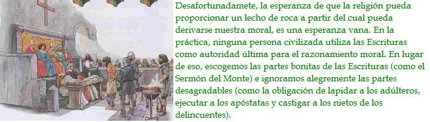

La supuesta separación entre ambas no es tan perfecta
Existe una cobarde blandeza del intelecto que aflige a gente que, normalmente racional, se enfrenta a religiones establecidas desde hace mucho tiempo (aunque, de manera significativa, no con tradiciones más modernas como la Cienciología o los Moonies). S. J. Gould, comentando la actitud del Papa acerca de la evolución en su columna de Natural History, es representativo de una escuela dominante de pensamiento conciliador entre creyentes y no creyentes:
La ciencia y la religión no están en conflicto, ya que sus enseñanzas ocupan dominios diferentes… Creo, con todo mi corazón, en un concordato respetuoso, incluso amoroso [el énfasis es mío]…
—Stephen Jay Gould
Bien, ¿en qué consisten esos dos dominios diferenciados, esos “Magisterios No Superpuestos” que deberían apiñarse en un concordato respetuoso y amoroso? De nuevo, Gould:
La red de la ciencia cubre el universo empírico: de qué está formado (hecho) y por qué funciona de esta manera (teoría). La red de la religión se extiende sobre cuestiones del significado y el valor moral.
—Stephen Jay Gould
¿Quién ostenta la moral?
Ojalá fuera tan perfecto. En un momento abordaré lo que realmente dice el Papa sobre la evolución, y luego otras afirmaciones de su iglesia, para ver si realmente están tan bien diferenciadas del dominio de la ciencia. Sin embargo, primero haré un inciso sobre la afirmación de que la religión posee algún tipo de preparación especial sobre cuestiones morales. Esto lo acepta a menudo incluso la gente no religiosa, presumiblemente con el ánimo de esforzarse civilizadamente por concederle al oponente la mejor cualidad que puede ofrecer - por muy débil que sea esa cualidad.
La pregunta “¿Qué es lo correcto y lo equivocado?” es una pregunta genuinamente difícil que la ciencia no puede responder. Dada una premisa moral o una creencia moral a priori, la importante y rigurosa disciplina de la filosofía moral secular puede buscar formas científicas o lógicas de razonamiento para sacar a relucir implicaciones ocultas de esas creencias, o inconsistencias ocultas entre ellas. Pero las propias premisas morales absolutas deben provenir de algún otro sitio, presumiblemente de la convicción no argumentada. O, puede esperarse, de la religión - lo que significa una combinación de autoridad, revelación, tradición y escritura.
Desafortunadamete, la esperanza de que la religión pueda proporcionar un lecho de roca a partir del cual pueda derivarse nuestra moral (que de otra manera estaría basada en arena), es una esperanza vana. En la práctica, ninguna persona civilizada utiliza las Escrituras como autoridad última para el razonamiento moral. En lugar de eso, escogemos las partes bonitas de las Escrituras (como el Sermón del Monte) e ignoramos alegremente las partes desagradables (como la obligación de lapidar a los adúlteros, ejecutar a los apóstatas y castigar a los nietos de los delincuentes). El propio Dios del Viejo Testamento, con sus celos vengativos y despiadados, su racismo, sexismo y ansias de sangre, no sería adoptado como modelo de comportamiento literal por nadie que usted o yo queramos conocer. Sí, por supuesto que es injusto juzgar las costumbres de una era antigua con nuestros estándares ilustrados. ¡Pero ése es precisamente mi punto! Evidentemente, tenemos una fuente alternativa de convicción moral última que invalida a las Escrituras cuando nos conviene.
Esa fuente alternativa parece ser algún tipo de consenso liberal sobre la decencia y la justicia natural que cambia a lo largo del tiempo histórico, frecuentemente bajo la influencia de reformistas seculares. Hay que admitir que eso no suena como un lecho de roca. Pero, en la práctica, nosotros, incluídos los religiosos, le damos una prioridad mayor que a las Escrituras. En la práctica, más o menos ignoramos las Escrituras, citándolas cuando respaldan nuestro consenso liberal, olvidándonos de ellas silenciosamente cuando no lo hacen. Y, venga de donde venga ese consenso liberal, nos es accesible a todos nosotros, seamos religiosos o no.
De manera similar, los grandes maestros religiosos como Jesús o Gautama Buddha pueden inspirarnos, con su buen ejemplo, a adoptar sus convicciones morales personales. Pero, de nuevo, escogemos nuestros líderes religiosos, evitando los malos ejemplos como Jim Jones o Charles Manson, y podemos escoger buenos modelos de comportamiento seculares como Jawaharlal Nehru o Nelson Mandela. También las tradiciones, por mucho tiempo que haya pasado desde que las seguimos, pueden ser buenas o malas, y utilizamos nuestro juicio secular de la decencia y la justicia natural para decidir cuáles seguir y cuáles abandonar.
La religión sobre el césped de la ciencia
Pero esta discusión sobre los valores morales no era más que una digresión. Ahora regreso a mi tema principal de la evolución y de si el Papa cumple con el ideal de mantenerse fuera del césped de la ciencia. Su “Mensaje sobre la Evolución de la Academia Pontificia de las Ciencias” comienza con un casuístico discurso tergiversador diseñado para reconciliar lo que Juan Pablo II estaba a punto de decir con los pronunciamientos anteriores más equivocados de Pío XII, cuya aceptación de la evolución era comparativamente más reacia y de mala gana.
La Revelación nos enseña que [el hombre] fue creado a imagen y semejanza de Dios. […] si el cuerpo humano tiene su origen en materia viva preexistente, el alma espiritual es creada inmediatamente por Dios […] Por consiguiente, las teorías de la evolución que, de acuerdo con las filosofías que las inspiran, consideran a la mente como algo que emerge de las fuerzas de la materia viva, o como un mero epifenómeno de esta materia, son incompatibles con la verdad sobre el hombre. […] Con el hombre, por tanto, nos encontramos ante una diferencia ontológica, un salto ontológico, podríamos decir.
Para crédito del Papa, en este punto reconoce la contradicción esencial entre las dos posiciones que intenta reconciliar: “Sin embargo, ¿no va la existencia de esa discontinuidad ontológica en contra de esa continuidad física que parece ser la línea de investigación principal en la evolución, en el campo de la física y la química?”
Que no cunda el pánico. Igual de a menudo que en el pasado, el oscurantismo viene al rescate:
Considerando el método utilizado en las variadas ramas del conocimiento, es posible reconciliar dos puntos de vista que parecen irreconciliables. Las ciencias de la observación describen y miden las múltiples manifestaciones de la vida con creciente precisión y las correlacionan con la línea del tiempo. El momento de transición a lo espiritual no puede ser objeto de este tipo de observación que, sin embargo, puede descubrir, a nivel experimental, una serie de signos muy valiosos que indican lo que es específico del ser humano

En lenguaje corriente, hubo un momento en la evolución de los homínidos en el que Dios intervino e inyectó un alma humana en un linaje que previamente era animal. (¿Cuándo? ¿Hace un millón de años? ¿Hace dos millones de años? ¿Entre el Homo erectus y el Homo sapiens? ¿Entre el Homo sapiens “arcaico” y el H. sapiens sapiens?) Es necesaria una inyección súbita, por supuesto, porque de otra manera no habría distinción en la que basar la moralidad católica, que es especiesista hasta la médula. Puedes matar animales adultos como alimento, pero el aborto y la eutanasia son asesinatos porque está implicada vida humana.
La “red” del catolicismo no se limita a las consideraciones morales, aunque sólo sea porque la moral católica tiene implicaciones científicas. La moral católica requiere la presencia de un gran abismo entre el Homo sapiens y el resto del reino animal. Tal abismo es fundamentalmente antievolutivo. La inyección súbita de un alma inmortal en la línea del tiempo es una intrusión antievolutiva en el dominio de la ciencia.
Hablando más generalmente, es completamente irrealista afirmar, como hacen Gould y muchos otros, que la religión se mantiene fuera del césped de la ciencia, restringida a la moral y los valores. Un universo con una presencia sobrenatural sería un universo fundamental y cualitativamente distinto de uno que no la tuviera. La diferencia es, ineludiblemente, una diferencia científica. La religión realiza afirmaciones sobre la existencia, y esto significa afirmaciones científicas.
Lo mismo es cierto para muchas de las principales doctrinas de la Iglesia Católica Romana. La Inmaculada Concepción, la Asunción corporal de la Virgen María, la Resurrección de Jesús, la supervivencia de nuestras almas tras la muerte: todo esto son afirmaciones de una naturaleza claramente científica. O Jesús tuvo un padre corporal o no lo tuvo. Ésta no es una cuestión de “valores” o “moral”; es una cuestión sobre un hecho formal. Puede que no tengamos la evidencia para responderla, pero es una cuestión científica. Puede estar seguro de que si se descubriese alguna evidencia que apoyara esa afirmación, el Vaticano no se resistiría a promocionarla.
O se descompuso el cuerpo de María cuando murió, o fue extraído físicamente de este planeta hacia el Cielo. La doctrina católica oficial de la Asunción, promulgada tan recientemente como en 1950, implica que el Cielo tiene una ubicación física y existe en el dominio de la realidad física - ¿Cómo podría el cuerpo físico de una mujer ir allí de otra manera? No estoy diciendo aquí que la doctrina de la Asunción de la Virgen sea necesariamente falsa (aunque, por supuesto, así lo pienso). Simplemente estoy refutando la afirmación de que está fuera del dominio de la ciencia. Al contrario, la Asunción de la Virgen es evidentemente una teoría científica. También lo es la teoría de que nuestras almas sobreviven a la muerte corporal, y todas las historias de las visitas angélicas, manifestaciones marianas y milagros de todo tipo.
Hay algo deshonesto y auto beneficioso en la táctica de afirmar que todas las creencias religiosas están fuera del dominio de la ciencia. Por un lado, las historias milagrosas y la promesa de la vida tras la muerte se utilizan para impresionar a la gente sencilla, ganar adeptos y engrosar rebaños. Es precisamente su poder científico lo que les da a estas historias su atractivo popular. Pero, al mismo tiempo, se considera golpe bajo someter a las mismas historias a los rigores habituales de la crítica científica: son temas religiosos y por tanto están fuera del dominio de la ciencia. Pero no se puede jugar a dos bandas. O, al menos, no se debería dejar a los teóricos y proselitistas religiosos que jueguen a dos bandas. Desafortunadamente, demasiada gente, incluyendo a gente no religiosa, está inexplicablemente dispuesta a dejarles.
Supongo que es gratificante tener al Papa como aliado en la lucha contra el creacionismo fundamentalista. Es ciertamente gracioso ver cómo se fastidian los planes de creacionistas católicos como Michael Behe. A pesar de ello, si me dieran a elegir entre el fundamentalismo genuino por un lado, y el doblepensamiento oscurantista y nada ingenuo de la Iglesia Católica Romana por otro, sé muy bien cuál prefiriría.
Copyright © 1998 Richard Dawkins

Richard Dawkins es biólogo evolutivo, nació en Nairobi, Kenya, en 1941 y se educó en la Universidad de Oxford. Comenzó su carrera como investigador en los 60, estudiando bajo la dirección del etólogo Nico Tinbergen, ganador del premio Nóbel, y desde entonces su trabajo ha girado en torno a la evolución del comportamiento. Ha obtenido las cátedras Gifford de la Universidad de Glasgow y Sidwich del Newham College de Cambridge. Además ha sido profesor de zoología de las universidades de Oxford y California, ha presentado programas de la BBC y dirigido varias publicaciones científicas. En 1995 se convirtió en el primer titular de la recién creada cátedra Charles Simony de Divulgación Científica en la Universidad de Oxford. Autor de obras muy leídas como:
El gen egoísta (1976; segunda edición, 1989; tercera, 2006)
El fenotipo extendido (1982)
El relojero ciego
El río del Edén (1995)
Escalando el monte improbable (1996)
Destejiendo el arco iris (1998) — Dawkins, con ironía pero también con rigor científico, se enfrenta a las pseudociencias mostrando lo que son: fraude, ilusión, alucinación, error o embuste.
El capellán del diablo (2003)
The Ancestor’s Tale: A Pilgrimage to the Dawn of Evolution (2004); El cuento del antepasado: un viaje a los albores de la evolución (2008)
The God Delusion (2006); El espejismo de Dios (2007)
The Greatest Show on Earth: The Evidence for Evolution (2009) (Evolución. El mayor espectáculo sobre la Tierra)
Volver a la sección Sociedad y religión
Comentarios
Comments powered by Disqus